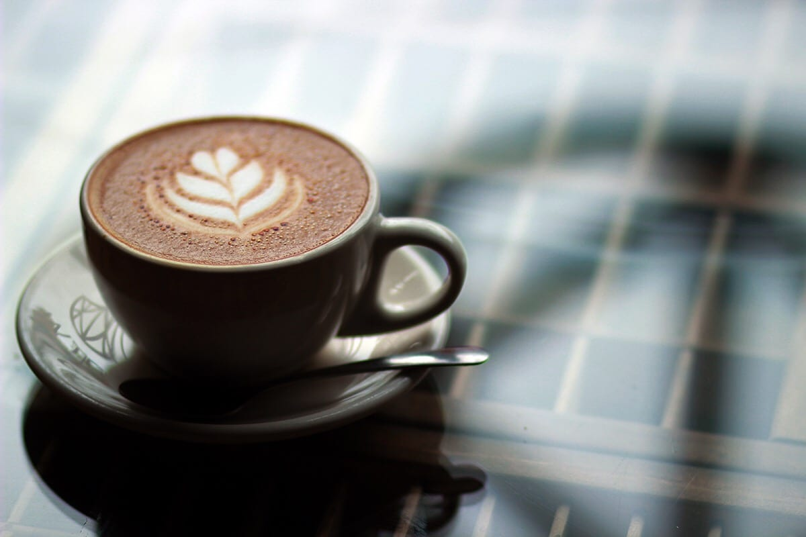

Follow the Winding Road to JavaJam
- Speciality Coffee and Tea
- Bagels, Muffins, and Organic Snacks
- Music and Poetry Readings
- Open Mic Night Every Friday
54321 Route 42
Ellison Bay, WI 54210
888-555-5555
54321 Route 42
Ellison Bay, WI 54210
888-555-5555